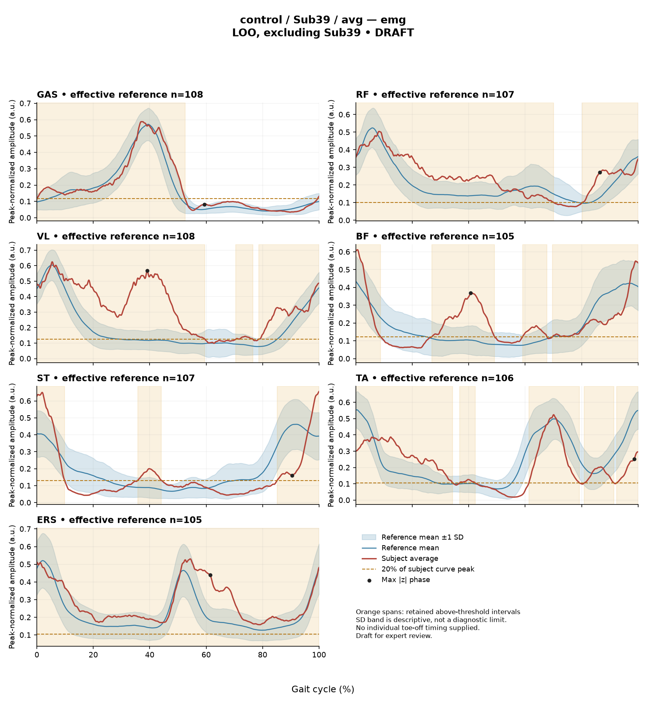
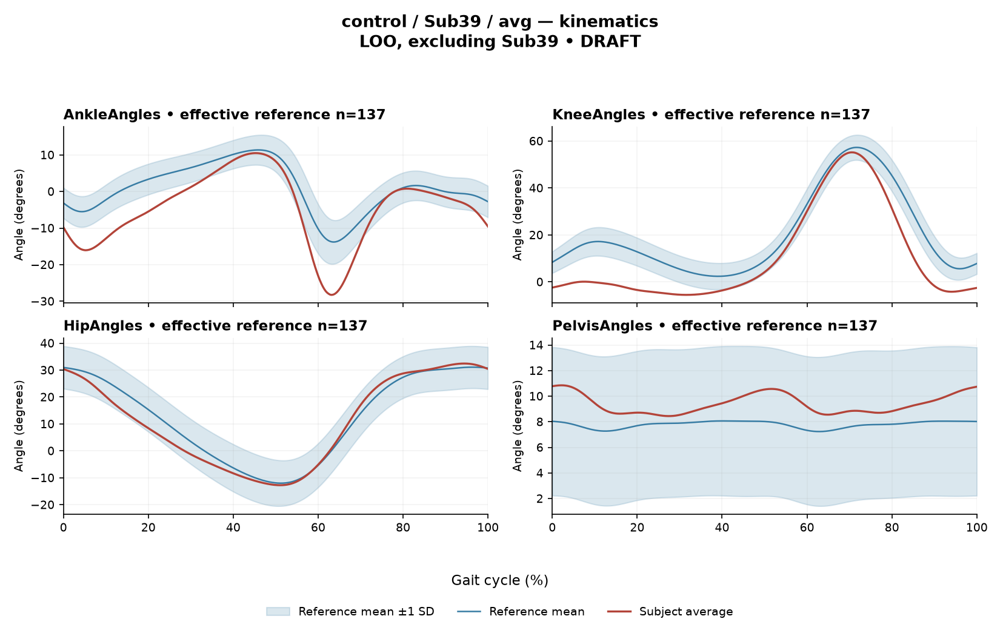

rater2 / Report 80 of 105 / Review spreadsheet row 81
RCB4DAF6627D94EF3
Case: control_Sub39_avg
Read this report independently. Record judgments in the workbook. Browser pages do not save ratings.
Report: exact saved text
1. Objective Findings Participant Sub39 is documented as a member of the healthy control group. As a control, a paretic/non-paretic affected side designation and a step length symmetry index are not applicable to this individual. Gait speed and cadence data were not provided for this participant. The composite sagittal kinematic deviation score (GPS-like) is 6.91. Because gait speed is unrecorded, it is impossible to determine whether an appropriate speed-matched reference exists within the dataset. It must be noted that healthy-group membership does not inherently prove normal physiology, and differences from an empirical reference cohort do not necessarily establish pathology. 2. EMG Envelope and Threshold Findings EMG metrics are based on ensemble-averaged envelopes, normalized to each muscle's respective maximum over available strides. Above-threshold intervals represent regions where the average envelope exceeded 20% of its own peak for at least 3% of the cycle. These metrics reflect average properties under this defined rule; they do not establish physiological onset, offset, duration, continuous contraction, or inactivity outside the intervals. "Wrapping" indicates the mean envelope remains above threshold across the 100% to 0% boundary, designated as the initial contact of contributing strides. - GAS: Retained interval at 0%-52%; 53% of the cycle is above threshold. Peak normalized amplitude is 0.59. - RF: Retained interval at 80%-70% (wrapping across the initial-contact boundary); 90% of the cycle is above threshold. Peak normalized amplitude is 0.50. - VL: Retained intervals at 70%-76% and 79%-60% (wrapping across the initial-contact boundary); 87% of the cycle is above threshold. Peak normalized amplitude is 0.62. - BF: Retained intervals at 27%-49%, 59%-68%, and 70%-9% (wrapping across the initial-contact boundary); 70% of the cycle is above threshold. Peak normalized amplitude is 0.61. - ST: Retained intervals at 36%-44% and 85%-10% (wrapping across the initial-contact boundary); 33% of the cycle is above threshold. Peak normalized amplitude is 0.66. - TA: Retained intervals at 37%-42%, 61%-79%, 81%-91%, and 92%-34% (wrapping across the initial-contact boundary); 76% of the cycle is above threshold. Peak normalized amplitude is 0.52. - ERS: Retained interval at 0%-100% (wrapping across the initial-contact boundary); 100% of the cycle is above threshold. Peak normalized amplitude is 0.53. Co-contraction indices (CCI) compute the whole-cycle overlap of these continuous normalized envelopes. The TA-vs-GAS CCI is 0.53, which is greater than the supplied reference median of 0.39 but within the empirical reference interval of 0.24 to 0.59. The RF-vs-BF CCI is 0.75, which is greater than the reference median of 0.68 and within the empirical interval of 0.48 to 0.83. Being within these reference intervals does not establish physiologically normal co-activation or specific muscular function, as these values depend heavily on the normalization method and capture algorithm. 3. Kinematic and Reference Comparisons The kinematic and EMG deviation reference comprises 137 pooled healthy subjects (leave-one-out method, excluding Sub39), comparing 1001 phase points per cycle. This reference cohort is not matched to the participant by age, and matching by speed cannot be verified as the participant's speed is unrecorded. Consequently, comparability is limited; deviations from this empirical reference cannot be used to establish a clinical restriction or disease effect. Sagittal kinematic summary differences from the reference include: - Ankle: Range of motion is 38.7 degrees; Gait Variable Score (GVS) is 6.91. - Knee: Range of motion is 60.7 degrees; GVS is 11.32. - Hip: Range of motion is 45.2 degrees; GVS is 3.45. - Pelvis: Range of motion is 2.4 degrees; GVS is 1.75. The composite GPS-like score (6.91) falls between the reference median (5.1) and the 95th percentile (10.7). Sagittal ROM alone does not establish a clinical joint restriction. Maximum |z| deviations represent the single largest standardized difference from the phase-specific reference mean across the cycle, not necessarily the timing of peak envelope amplitude or a specific gait event. - GAS: max |z| = 1.3 (above the reference mean at 59% of the cycle). - RF: max |z| = 2.5 (above the reference mean at 86% of the cycle). - VL: max |z| = 7.4 (above the reference mean at 39% of the cycle). - BF: max |z| = 3.3 (above the reference mean at 41% of the cycle). - ST: max |z| = 2.0 (below the reference mean at 90% of the cycle). - TA: max |z| = 2.4 (below the reference mean at 99% of the cycle). - ERS: max |z| = 3.3 (above the reference mean at 61% of the cycle). 4. Questions for Further Clinical Assessment - What is the participant's actual self-selected gait speed, and would measuring it clarify the degree of comparability between this subject's kinematic profiles and the unmatched reference cohort? - Do the fragmented intervals observed in the average TA and BF envelopes, as well as the near-continuous above-threshold activity seen in RF, VL, and ERS, reflect the subject's actual stride-to-stride neuromotor control, or are they primarily artifacts of the amplitude normalization and averaging algorithm? - Does the elevated deviation at the knee (GVS 11.32) correlate with any observable functional movement pattern, given that this participant belongs to the healthy control group? - Are the high max |z| extreme-value statistics (e.g., VL at 7.4) indicative of a genuine kinematic or biomechanical variation, taking into consideration that leave-one-out extremes in unmatched cohorts can naturally run high?
Requirements for this report
Fill the corresponding Coverage rows in the workbook. G03 is included once. These are the approved requirements, not prefilled judgments.
| Excel row | ID | Required content | Components / optional content |
|---|---|---|---|
| 416 | R187 | Identify knee AND ankle as the principal sagittal joint-curve differences. Exact GVS values are optional; these differences do not change the supplied control identity. | AND: knee AND ankle. Stating which joint is larger is optional; asserting the reverse order is an error. Exact GVS values are optional; no waveform direction, phase or restriction is required. |
| 417 | R188 | Describe VL envelope above its phase-specific reference mean at approximately 39% of the analysis cycle (displayed max |z| 7.4). Within each route, muscle identity AND mean-relative direction AND approximate cycle location are required. Exact max-|z| repetition is optional. | Required for each route: muscle identity AND direction relative to the phase-specific reference mean AND approximate cycle location. Optional: exact max |z| value, comparison with the supplied endpoint span (descriptive only). Prohibited: percentile classification, gait phase, physiological onset, severity. Healthy provenance does not make the finding normal, and the finding does not make the participant abnormal. |
| 418 | A011 | Identify the participant as a healthy control AND state that the leave-one-out comparison excludes this participant. IF speed is discussed, state it was not supplied; IF cadence is discussed, state it was not supplied; IF the task-specific paretic/non-paretic step-length index is discussed, state it is not applicable. Each branch is triggered only by that domain. Exact reference count 137 is optional. | AND: healthy-control provenance AND self-exclusion from the leave-one-out reference. Conditional, per domain: speed not supplied; cadence not supplied; task-specific paretic/non-paretic index not applicable. Optional: count 137. G03 applies separately once. A correct core with one missing AND component is partial. |
| 419 | G03 | Express a meaningful limitation of reference comparability AND why the comparison cannot establish disease effects or clinical diagnosis; for controls it cannot establish disease or overall normality. One statement may also support a case requirement. | AND: comparability and inference limitations |
Exact model input: system instruction
Draft a research gait-report interpretation for a physical therapist or physiatrist using only the supplied quantitative summary. This is a limited-evidence interpretation task, not diagnosis or treatment selection. Rules: - Describe the participant's actual group and side, available findings, and missing channels accurately. Healthy-group membership does not prove normal physiology; deviations from an empirical reference do not by themselves establish disease. - Treat detected EMG intervals and coverage as properties of an averaged envelope under the stated threshold and duration rule. Do not convert them into physiological onset, offset, duration, continuous contraction, or inactivity outside the intervals. You may describe reported coverage, retained intervals and boundary continuity at the mean-envelope level. Do not infer the same pattern in every individual stride. Say no below-threshold segment only when the supplied evidence establishes that; a rounded coverage value or no retained interval alone does not establish it. - Individual toe-off and matched muscle-specific timing references are not supplied in this task. Use percentages of the analysis cycle. When the input explicitly identifies an initial-contact boundary, you may name that boundary or describe numerical proximity to it. Do not assign stance/swing, loading response, pre-swing, mid-stance or another event to a percentage, or substitute a conventional 60% split. Anatomical muscle actions may be named, but do not map an interval to a gait-phase function such as clearance, push-off or weight acceptance. Do not characterize timing as normal, early, delayed or prolonged without the required evidence. - Respect the supplied normalization method. Relative envelope amplitude is not strength or force, and average curves do not establish stride-to-stride variability. - Report CCI as a whole-cycle overlap index of normalized EMG envelopes. You may compare it with the supplied empirical interval or a supplied median, including proximity to an endpoint. Do not invent an unavailable median. Being within that interval does not establish physiologically normal co-activation or normal muscle function; being outside it does not establish pathological co-activation, stiffness, impaired control or a diagnosis. CCI is not simultaneous activation time, muscular force or a phase-specific result. It depends on normalization and envelope methods; do not transfer values or thresholds from other studies or algorithms. - Describe GVS and GPS-like as summary differences from the stated reference. Neither localizes waveform direction or phase; ROM alone does not establish a clinical restriction without an appropriate comparison. Do not treat pooled calibration percentiles as matched leave-one-out normal limits. - Where using a reference comparison, convey both limited comparability and the inability to establish a disease effect or clinical diagnosis from that comparison. One clear explanation per report is enough; age and speed need not be recited as separate checklist words. A speed inside an overall range does not prove that an appropriate matched reference exists. Apply these limits to controls as well. - The location of maximum |z| is the largest standardized difference from the reference, not necessarily the time of peak envelope amplitude or a gait event. Above/below reference in an EMG row means relative to the phase-specific reference mean at that location, not relative to a healthy percentile limit. - Preserve numerical direction and the displayed precision. Do not invent values, clinical severity grades, statistical significance, or unavailable reference values. Descriptive comparisons with supplied values remain allowed. Near-boundary rounded values do not justify classifying hidden unrounded values. - Clinical follow-up questions may ask whether a mechanism or measurement issue exists; do not presuppose it has already been observed. Do not recommend treatment. If EMG is unavailable, section 2 may simply state that envelope timing, amplitude and CCI cannot be assessed. Reference-only plots do not provide patient EMG. Use exactly these four sections: 1. Objective Findings 2. EMG Envelope and Threshold Findings 3. Kinematic and Reference Comparisons 4. Questions for Further Clinical Assessment
Exact model input: case summary
Candidate interpretation version: limited-evidence-v3.1-candidate
Draft the four-section report using only this subject's supplied evidence.
Metric definitions (read before interpreting any number below):
- All joint angles and ROM values are SAGITTAL PLANE only. Coronal/transverse data are not included.
- The released EMG curves are ensemble-averaged envelopes. For each participant and recorded muscle, normalization uses a shared maximum across the available strides before averaging; individual strides are not independently rescaled to their own peaks. This pipeline uses the released mean curves without further amplitude normalization. For healthy controls, the normalization and left/right stride pooling account comes from the release documentation. Healthy MAT aggregation and side-specific denominators were not numerically verified by the stroke audit. Amplitudes are relative envelope values, not absolute neural activation, force, or strength. Do not rank muscles as stronger or weaker from these amplitudes, or infer stride-to-stride variability from an average curve.
- Above-threshold intervals are the regions where the averaged envelope exceeds 20% of that curve's own peak, minimum retained interval 3% of the cycle (by sample count). An interval written as (X%-Y%) with X > Y wraps across the 100%->0% cycle boundary (envelope remains above threshold across the cycle-defining event). An onset of 0% is the analysis-window boundary, not necessarily a physiological onset. "No interval detected" means no region met the threshold + duration criteria; it does NOT mean the muscle is inactive or non-functional.
- CCI is the Falconer-Winter co-contraction index computed on the full continuous envelopes (2*common area / summed areas), so it can be non-zero even when the DETECTED burst intervals of the pair do not overlap (sub-threshold activity contributes).
- The composite kinematic deviation score is the RMS of the per-joint Gait Variable Scores over the sagittal channels provided ("GPS-like", not the validated 9-variable GPS).
- The paretic/non-paretic step-length index used in this task is not applicable to controls. This does not imply that a general left/right step-length symmetry measure cannot be defined.
- "Max |z| deviation" is the LARGEST absolute z-score across all 1001 phase points of the cycle, comparing this curve to the healthy-cohort mean/SD at each phase. This is an extreme-value statistic, NOT a single-observation z-score: in this dataset every one of 109 healthy controls exceeds |z| = 2 on at least one muscle, and per-muscle healthy 95th percentiles for this statistic run 3.65 (ERS) to 4.61 (TA) -- higher still under leave-one-out. Do not label a value abnormal by the conventional 2-SD rule; use the healthy reference range given per muscle where provided.
- Healthy-cohort CCI reference (this dataset): RF-vs-BF median 0.68 (2.5th-97.5th pct 0.48-0.83); TA-vs-GAS median 0.39 (0.24-0.59). Composite score reference: median 5.1, 95th percentile 10.7.
- COHORT BACKGROUND (calibration context, not necessarily the exact reference used for this subject -- the actual reference composition is stated in a dedicated line with the subject data below): the full healthy cohort is 138 subjects for kinematics, effective n = 106-109 per muscle for EMG (29 controls have no usable EMG; completeness varies by age), pooling both body sides and all ages; it is not age- or speed-matched to this subject. A leave-one-out run uses one subject fewer than these counts.
- SPEED SUPPORT LIMIT (applies to most stroke subjects in this dataset): the healthy reference cohort's self-selected walking speeds span 0.80-1.79 m/s. If this subject's gait speed is below 0.80 m/s, NO speed-matched healthy reference exists in this dataset -- 41 of the 50 stroke subjects are below that floor. Deviations from the reference then conflate slow-walking effects with stroke-specific control changes, and the two cannot be separated from these data. Describe deviations from the reference as such; do not attribute them wholly to stroke pathology.
- Additional source fields are outside this input. Age, sex and gait events may be available in the release; time post-stroke, stroke clinical scores and a non-paretic-side designation apply only to the stroke cohort, as applicable. Do not claim every listed field exists for every participant. Distinguish not supplied, not applicable and documented absent recordings.
The release dictionary defines contributing strides from initial contact of the stride-defining limb (0%) to its next initial contact (100%). The healthy Excel release averages left- and right-side strides, so this is an initial-contact-aligned pooled cycle, not one named limb's observed event trace. This event anchor is documentary; healthy MAT pooling was not numerically reverified. The boundary may be called initial contact of contributing strides. No intermediate event or phase boundary is supplied.
Model-visible information boundary: the summary contains mean-curve metrics and algorithm-detected intervals, not individual toe-off, matched normal muscle timing, stride-level variability, raw-signal quality checks, or expert plots. Information not supplied here must not be described as absent from the source dataset. Gait-cycle percentages alone do not identify gait phases.
Subject: Sub39 (group: control, affected side: N/A)
Gait speed: not provided
Cadence: not provided
Step length symmetry index: not applicable (this task's paretic/non-paretic index; control has no paretic side)
Composite kinematic deviation score (GPS-like): 6.91
Deviation reference actually used for this subject: 137 healthy subjects (leave-one-out, excluding Sub39), 1001 phase points, source: main_cohort_excel.
EMG envelope findings:
- GAS: above-threshold interval(s) 0%-52%, 53% of cycle above threshold, peak normalized amplitude 0.59, max |z| vs healthy reference: 1.3 (above reference, at 59% of cycle)
- RF: above-threshold interval(s) 80%-70% (wraps cycle boundary), 90% of cycle above threshold, above threshold across cycle boundary, peak normalized amplitude 0.50, max |z| vs healthy reference: 2.5 (above reference, at 86% of cycle)
- VL: above-threshold interval(s) 70%-76%; 79%-60% (wraps cycle boundary), 87% of cycle above threshold, above threshold across cycle boundary, peak normalized amplitude 0.62, max |z| vs healthy reference: 7.4 (above reference, at 39% of cycle)
- BF: above-threshold interval(s) 27%-49%; 59%-68%; 70%-9% (wraps cycle boundary), 70% of cycle above threshold, above threshold across cycle boundary, peak normalized amplitude 0.61, max |z| vs healthy reference: 3.3 (above reference, at 41% of cycle)
- ST: above-threshold interval(s) 36%-44%; 85%-10% (wraps cycle boundary), 33% of cycle above threshold, above threshold across cycle boundary, peak normalized amplitude 0.66, max |z| vs healthy reference: 2.0 (below reference, at 90% of cycle)
- TA: above-threshold interval(s) 37%-42%; 61%-79%; 81%-91%; 92%-34% (wraps cycle boundary), 76% of cycle above threshold, above threshold across cycle boundary, peak normalized amplitude 0.52, max |z| vs healthy reference: 2.4 (below reference, at 99% of cycle)
- ERS: above-threshold interval(s) 0%-100%, 100% of cycle above threshold, above threshold across cycle boundary, peak normalized amplitude 0.53, max |z| vs healthy reference: 3.3 (above reference, at 61% of cycle)
Co-contraction indices:
- TA_vs_GAS: CCI = 0.53
- RF_vs_BF: CCI = 0.75
Joint kinematic findings (sagittal plane):
- AnkleAngles: range of motion 38.7 deg, Gait Variable Score 6.91
- KneeAngles: range of motion 60.7 deg, Gait Variable Score 11.32
- HipAngles: range of motion 45.2 deg, Gait Variable Score 3.45
- PelvisAngles: range of motion 2.4 deg, Gait Variable Score 1.75Reference context for expert review
# Reference context: control/Sub39 Mean/SD reference: 137 controls; method leave_one_out; exclusions: ['Sub39']. Effective reference counts: GAS=108, RF=107, VL=108, BF=105, ST=107, TA=106, ERS=105, AnkleAngles=137, KneeAngles=137, HipAngles=137, PelvisAngles=137. The exact system and user input files define what the model receives. The EMG and kinematic plots are supplementary expert evidence, not model inputs. The plotted mean plus/minus one SD is descriptive, not a clinical normal band. Negative lower EMG bands can result from mean minus SD; they do not imply negative recorded EMG. The max-|z| p95 span in the input is pooled calibration context. Complete muscle-specific LOO thresholds are not supplied; an appropriately indeterminate classification is allowed. Controls are excluded from their own mean/SD reference, but cohort-level calibration has prior reference-data reuse. It is not an independent matched clinical limit. GPS-like is a four-channel sagittal composite, not the validated nine-variable GPS. The pooled median/p95 background is not a matched LOO normality boundary. CCI uses continuous normalized envelopes over the whole analysis cycle. An empirical interval comparison does not establish normal muscle function. Threshold intervals and rounded coverage describe the averaged envelope. Rounded 100% coverage and one interval do not prove absence of short below-threshold gaps. Use the group-specific cycle and normalization provenance in the actual input. No individual intermediate gait events or matched normal muscle timing are supplied. Administrative age and published bilateral speed are not added to this input. Expert-visible plots do not justify requiring unseen direction, phase or morphology. For a new-case requirement, cite exact input evidence. Select clinically useful descriptive content without inferring a diagnosis or severity from rank alone.
EMG and kinematic curves
The curves are supplementary expert evidence. Only the saved text inputs were supplied to the model; do not require curve-only observations.
EMG

Kinematics
